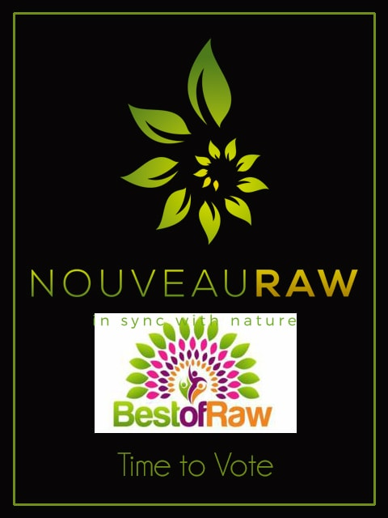

Best of Raw… Time to Vote!

Good morning!
As many of you may know, last year through the amazing support and love of those who follow Nouveau Raw… we won the “Favorite Online Blog” award. Every year around this time, those that are involved in the raw lifestyle get nominated in various categories. One of my readers contacted me saying that they wanted to nominate me for the “Favorite Online Blog” award again. As honored as I was, you can’t enter in the same category two years in a row. :) So with that being said, this year I am listed in two different categories…
Professional Gourmet Chef 5+ years
Professional Raw Photographer
To vote, please click on the following link: Best of Raw. You can vote for me, Amie Sue Oldfather, or for any one else who has been an inspiration to you on your journey. No matter who you vote for, please vote. It shows great support and encouragement to all of us who share our love and passion with all of you.
How to Vote:
- Click on the blue Vote button below. This will redirect you to the Best of Raw site.
- From there click on the large sign that reads “Click here to enter the voting portal”
- If you haven’t voted before, follow the instructions to be able to log in.
- Then click to vote.
- In the next screen, “select a category” if you are voting for me, the category would be “PEOPLE”.
- Under that, select the bar below and click on Professional Gourmet Chef 5+ years and / or Professional Raw Photographer.
- Then select the name and then submit.
- To vote in another category, on the left hand menu, click on “select another vote”.
- You can vote for both if you wish.
The contest is open from November 15th through January 8th.
© AmieSue.com